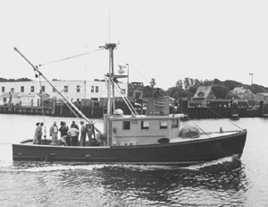

|  copyright - WHOI |
|
The second Asterias, built to replace the original, was
a somewhat larger fiberglass version and is used in coastal waters for
short cruises and for testing scientific equipment.
ASTERIAS 1980 to present
The second Asterias, built to replace the original, was
a somewhat larger fiberglass version and is used in coastal waters for
short cruises and for testing scientific equipment.
|